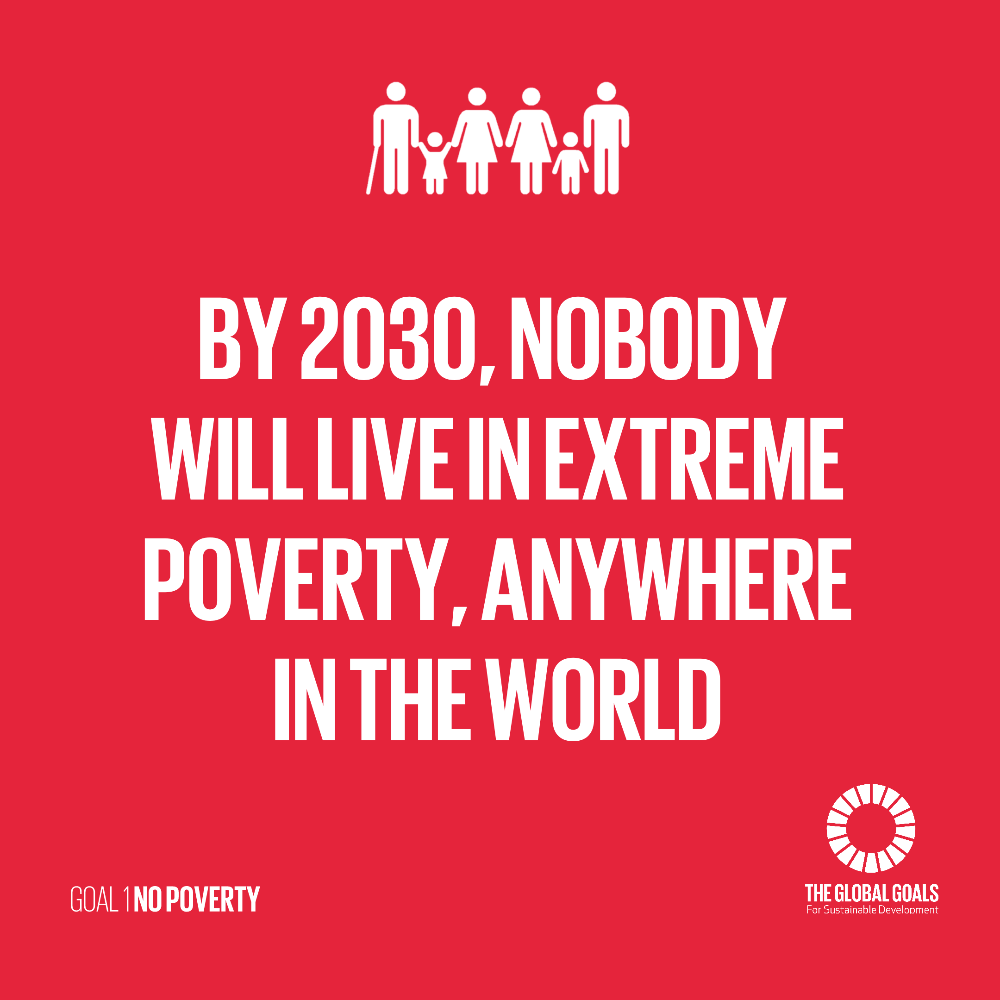

UN GOAL 1 No Poverty

"Mehr
als 700 Millionen Menschen, das entspricht ca. 11% der Weltbevölkerung leben
immer noch in extremer Armut. Sie kämpfen tagtäglich um den grundlegende Dinge
wir Zugang zu Wasser oder sanitären Einrichtungen, aber auch im Bereich
Gesundheit und Bildung mangelt es an allen Ecken und Enden.Es stimmt, dass die
Mehrheit der Menschen die mit unter 1,90$ am Tag auskommen müssen in Südasien
und Afrika (südlich der Sahara) leben, aber die Gesamtzahl der globalen
Bevölkerung befindet sich auch dort. Rund 70% leben in diesen Regionen. Die
wirtschaftlichen Verluste aufgrund von Naturkatastrophen seit dem Jahr 2017
wird auf ca. 300 Milliarden US-Dollar geschätzt. Das Thema “Armut” betrifft
aber auch die Industrieländer. Neben der Senioren (Altersarmut) sind auch ca.
30 Millionen Kinder in den reichsten Länder der Welt betroffen."
Quelle: https://zeozweifrei.de/sdg-ziel-1/
Dieses Ziel ist aus einem BESTIMMTEN GRUND das erste Ziel der UN! Wie schon oben erwähnt leben VIELE Menschen in Armut und darunter auch viele Senioren und Kinder. Die Armut führt die Armut auch in eine Hungersnot UN-GOAL-2-ZERO-HUNGER. Wegen der ärmlichen Verhältnissen sterben auch viele Leute an schmutzigen Wasser oder sie verhungern einfach.
Du willst mehr über die Ziele der UN erfahren? Schau dir doch auch meine restlichen Seiten an:
{kind=link}